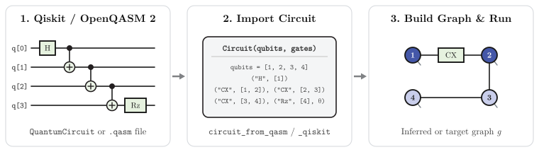

Circuits from Qiskit

Circuits written in qiskit, or in anything else that exports OpenQASM 2, can be simulated directly. They are converted into a Circuit holding the declared qubits and the gates (see Gate Application), and run with apply_gates. The gate registry follows qiskit's names and parameter conventions, so every one- and two-qubit qiskit standard gate converts exactly.
There are two routes:
- OpenQASM 2, with
circuit_from_qasm. This works for circuits built in Python qiskit, Cirq, PennyLane or by hand, and needs nothing beyond TensorNetworkQuantumSimulator.jl. - Qiskit.jl, with
circuit_from_qiskit, for circuits built in Julia with Qiskit.jl. It is available once Qiskit.jl is loaded.
From Python qiskit, via OpenQASM
Write the circuit out with qasm2:
from qiskit import QuantumCircuit, qasm2
qc = QuantumCircuit(4)
qc.h(0)
for q in range(3):
qc.cx(q, q + 1)
qc.rz(0.3, 3)
qc.measure_all()
qasm2.dump(qc, "circuit.qasm")and read it in Julia:
using TensorNetworkQuantumSimulator
circuit = circuit_from_qasm(read("circuit.qasm", String))
g = build_graph_from_circuit(circuit)
ψ0 = tensornetworkstate(ComplexF64, v -> "↑", g, "S=1/2")
ψ, errors = apply_gates(circuit, ψ0; apply_kwargs = (; maxdim = 16, cutoff = 1e-12))
expect(ψ, [("Z", [1]), ("ZZ", [1, 4])]; alg = "bp")Qubit q[k] becomes vertex k + 1 (qiskit numbers qubits from 0), counting across qregs in the order they are declared. Barriers and measurements at the end of the circuit are dropped: the result is the state before measurement, which you can sample with sample. circuit.qubits retains every declared qubit, including idle ones; circuit.gates contains only the imported gates.
Choosing the graph
From the circuit. build_graph_from_circuit(circuit) gives one vertex per qubit and an edge between every pair of qubits that a two-qubit gate couples, so every gate is local. This is the natural choice for circuits compiled for hardware: a circuit transpiled for an IBM device only couples neighbouring qubits, so its graph is a piece of the heavy-hex lattice. Circuits that couple many pairs of qubits (a quantum Fourier transform, say) give a graph with high-degree vertices, whose tensors are large.
A graph of your own. Pass the vertex of each qubit as qubits:
g = named_hexagonal_lattice_graph(2, 2)
qubits = collect(vertices(g))
circuit = circuit_from_qasm(read("circuit.qasm", String); qubits)Idle qubits become isolated vertices in build_graph_from_circuit(circuit). Independent groups of gates remain separate connected components. These circuits can be applied and sampled with belief propagation; algorithms such as CTMRG still require a connected graph. A supplied graph must contain every declared qubit.
Every two-qubit gate must then act on neighbouring vertices. Let qiskit route the circuit onto the graph first, using the graph's edges, numbered the same way, as its coupling map:
index = Dict(v => k - 1 for (k, v) in enumerate(qubits))
coupling_map = [[index[src(e)], index[dst(e)]] for e in edges(g)]from qiskit import transpile
from qiskit.transpiler import CouplingMap
edges = ... # coupling_map from Julia
cmap = CouplingMap(edges + [[b, a] for a, b in edges])
routed = transpile(qc, coupling_map=cmap, basis_gates=["rz", "sx", "x", "cx"])
qasm2.dump(routed, "routed.qasm")Routing moves logical qubits around: logical qubit l ends on physical qubit p = routed.layout.final_index_layout()[l], which is vertex qubits[p + 1].
From Qiskit.jl
With Qiskit.jl loaded, circuit_from_qiskit converts a QuantumCircuit directly:
using Qiskit
using TensorNetworkQuantumSimulator
qc = QuantumCircuit(3)
qc.h(1)
qc.cx(1, 2)
qc.cx(2, 3)
qc.rzz(0.4, 1, 3)
circuit = circuit_from_qiskit(qc)
g = build_graph_from_circuit(circuit)
ψ, errors = apply_gates(circuit, tensornetworkstate(ComplexF64, v -> "↑", g, "S=1/2"))Qiskit.jl numbers qubits from 1, and qubit k becomes vertex k. The qubits keyword works as for circuit_from_qasm.
What is supported
- Every one- and two-qubit qiskit standard gate (see Supported Gates). In OpenQASM, gates the program defines itself (
gate name(params) args { ... }) are expanded from their definitions; gates the registry knows are taken from it, as one native gate, so qiskit's own definitions of standard gates are not needed. - Parameters as numbers or expressions (
pi/4,-0.5*theta,sin(...), ...). Parameterised qiskit circuits must be bound to numbers before export. - Barriers, delays and the global phase are dropped, as are measurements at the end of the circuit.
Gates on three or more qubits, resets, classically controlled gates, mid-circuit measurements and arbitrary unitary instructions raise an ArgumentError. Transpile such circuits to one- and two-qubit basis gates first, e.g. transpile(qc, basis_gates=["rz", "sx", "x", "cx"]). OpenQASM 3 is not supported; export with qasm2.